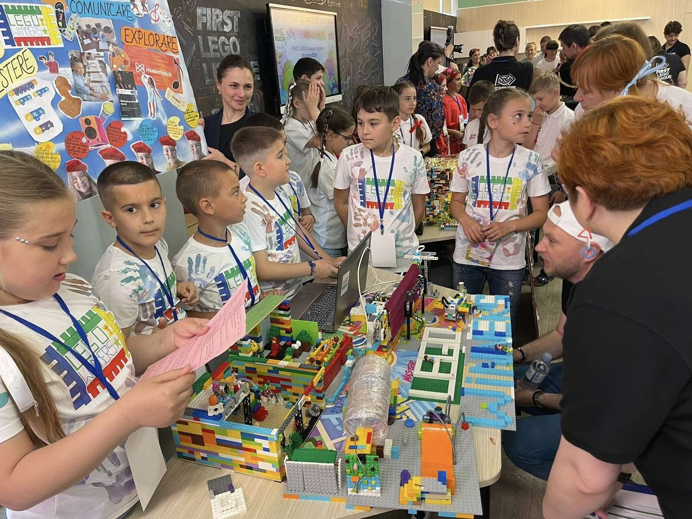
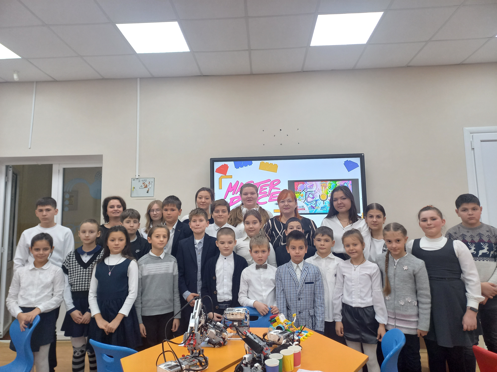
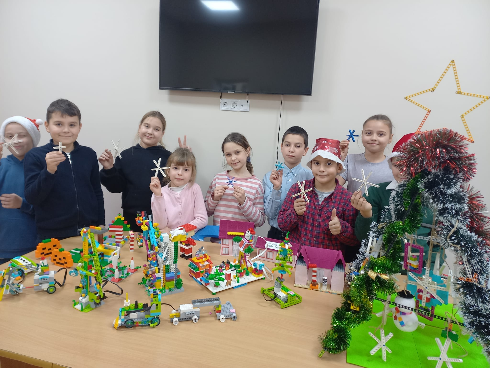

Activități realizate în cadrul clubului de robotică
First Lego League Explore Moldova 2024
În data de 26.05.2024, 2 echipe formate din 16 elevi ai claselor II-a - a IV- a din Instituția Publică Liceul Teoretic ,,Mihai Eminescu”, echipa LEGO Winners și LEGO Builders au participat la competiția națională First Lego League Explore Moldova 2024, organizat de Centrului Național de Inovații Digitale în Educație „Clasa Viitorului. Tematica competiției de anul acesta a fost Masterpiece. Ambele echipe au construit câte un model al echipei, care a fost robotizat și un poster. Fiecare a venit cu câte o soluție inovatoare. Noi am avut o pregătire maximă, cu studiul caietului inginerului și cunoaștere și aplicare a valorilor fundamentale. Maiourile purtate de noi au fost cele mai deosebite, printate cu simbolul echipelor noastre. Emoții pozitive de bucurie și fericire pe care le-am trăit în cadrul acestui concurs le vom păstra în suflet pentru un an întreg. Juriul a apreciat sârguința noastră cu diplome și medalii originale create din piese lego. LEGO Winners a fost menționată cu diplomă specială la categoria Programare și LEGO Builders cu diplomă specială la categoria Valori fundamentale. Am dansat hora mare și am mâncat câte o bucată dulce din cel mai mare tort cu imprimeu FLL Explore Moldova 2024 Masterpiece.
Simpozionul transdisciplinar ”Semănătorii de valori naționale din localitate și republică”, ediția a II-a
20 și 21 ianuarie 2024, două zile de activități desfășurate în Anenii Noi cu participarea colegilor-parteneri de la Centrul Județean de Excelență Vaslui, în persoana doamnei profesor Gabriela Plăcintă, directoarea centrului și domnului Alexandru Mîță, profesor coordonator. Întâlnirea și discuția cu domnul Alexandru Moisei, președintele raionului, domnii Dmitrii Ciur și Alexei Maliuta, vicepreședinți, doamna Nadejda Sîrbu, șefa Direcției economie, dezvoltare regională și atragere investiții au fost constructive și au confirmat aspirația ambelor părți pentru o colaborare eficientă în vederea implementării proiectelor comune. Oaspeții de peste Prut au participat la lucrările Simpozionul transdisciplinar ”Semănătorii de valori naționale din localitate și republică”, ediția a II-a, gazda evenimentului fiind IPLT ”Mihai Eminescu” or.Anenii Noi. Programul activităților prezentat de liceeni, ghidați cu măiestrie de cadrele didactice și administrația instituției, în persoana doamnei Victoria Borisov, a fost unul vast și consistent.
Sărbătoarea de Crăciun în cadrul Clubului de Robotică
Eveniment mult așteptat. Cu pregătiri minuțioase, însoțit de construcții lego cu tematică de crăciun și desigur coline, coline. Crăciunul este o sărbătoare creștină celebrată anual pe 25 decembrie, care marchează nașterea lui Iisus Hristos. Aceasta este una dintre cele mai importante sărbători din calendarul creștin și este asociată cu o serie de tradiții și obiceiuri culturale, atât religioase, cât și laice. Printre cele mai comune tradiții de Crăciun în clubul nostru se numără: Împodobirea bradului de Crăciun din piese lego: Se decorează un brad cu globuri, luminițe și alte ornamente festive. Cadourile: Copii își oferă cadouri unii altora, simbolizând darurile aduse de cei trei magi lui Iisus la nașterea sa. Colindele: Grupul de colindători, cântând cântece tradiționale care vestesc nașterea Mântuitorului și le postează în grupul de facebook.